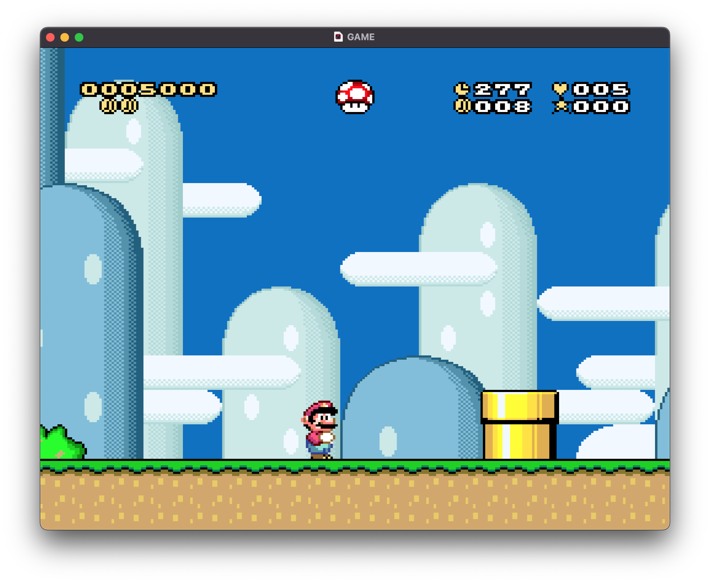
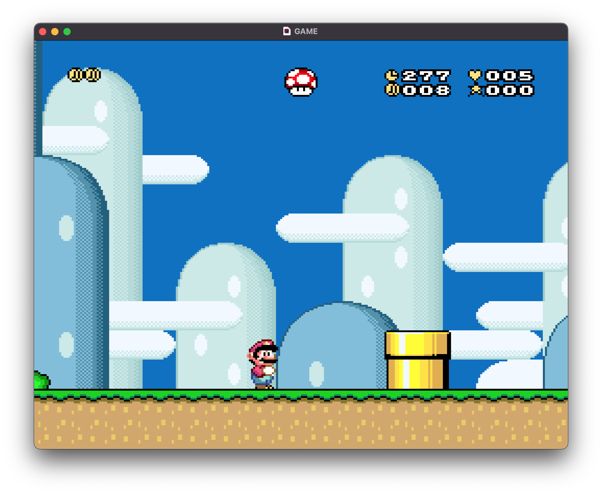
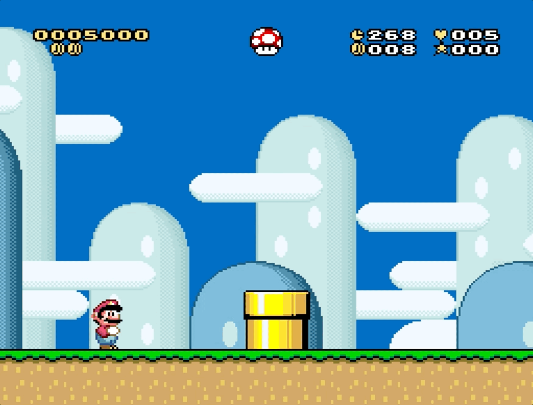
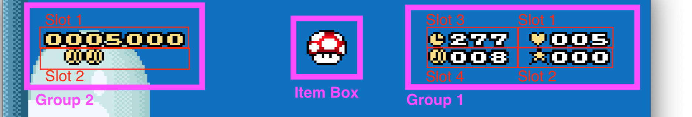
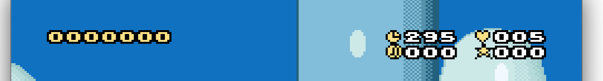
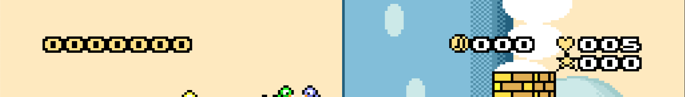
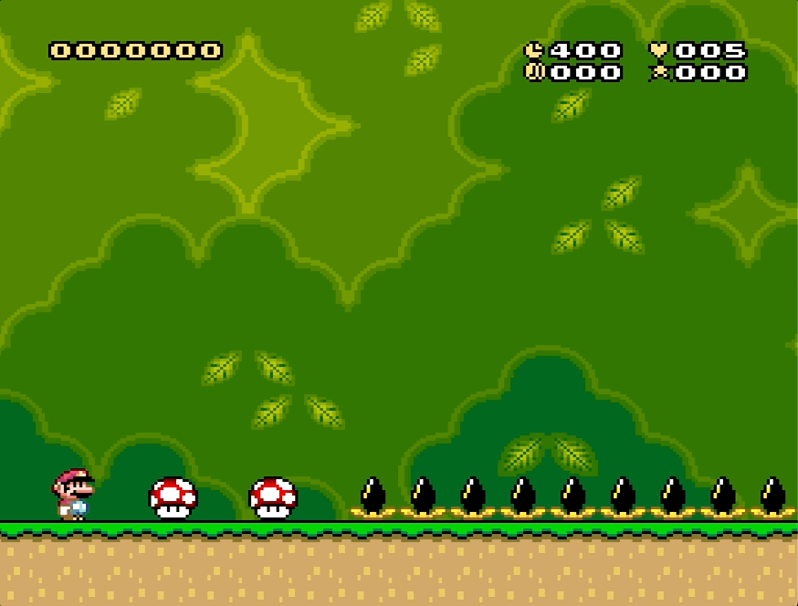
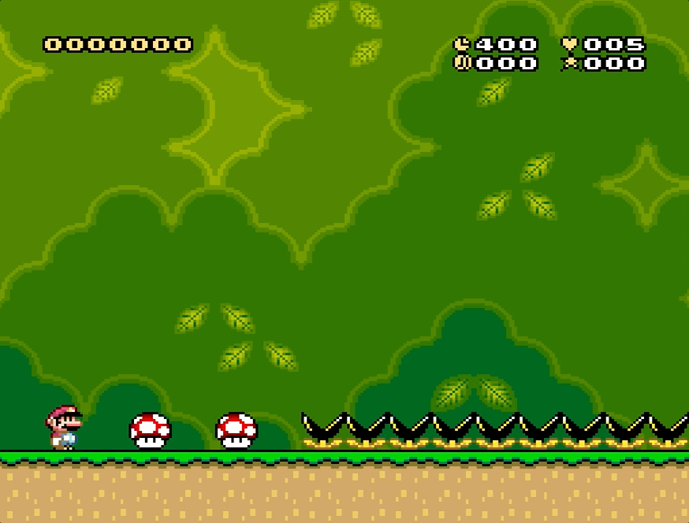
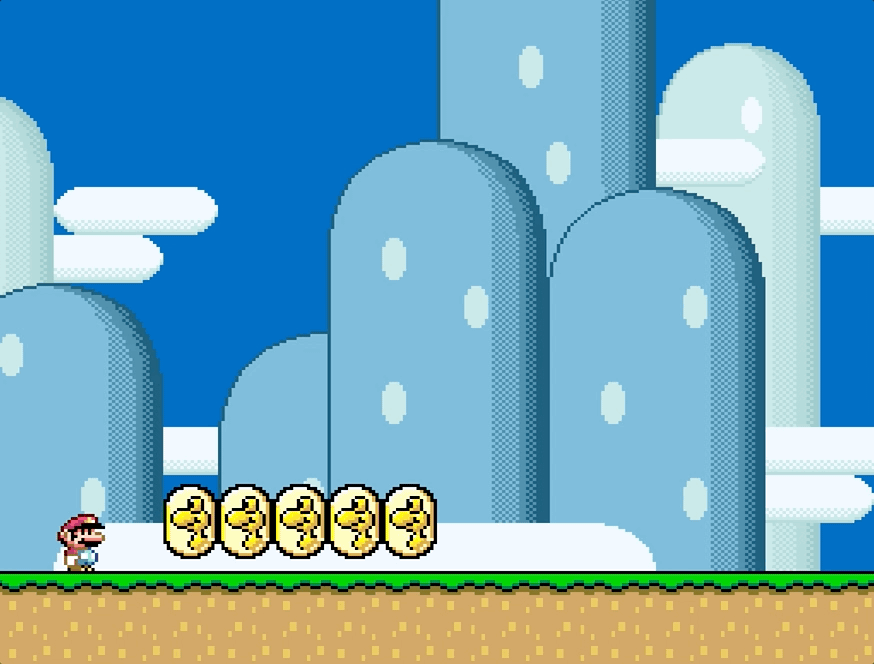

Yet another patch for customizing the status bar.
So, why make another patch that modifies the status bar?
I wanted a status bar that has the following features:
Let's cover each aspect individually.
The patch presents all elements of the original SMW status bar in a more minimalistic style.
|  |
|---|
| All elements, less clutter |
Goodbye nasty graphics that crowd your screen!
N.B.: The patch comes with a modified GFX28 with (imo) prettier graphics for some elements. Usage is completely optional.
This patch allows to control the visibility of the different elements of the status bar easily via defines. You can disable useless components on the fly
!ScoreVisibility = 0
|  | |
|---|---|
| Before | After |
The patch provides a set of settings that allow to configure the status bar globally. However, if you feel the need to enable/disable/tweak the behavior of the sidebar for a specific level, you can just do that!
|  |
|---|
| The sublevel has only time configured |
Global configuration is done via the settings you find in configuration/global.asm, while per-level customization is handled through tables in configuration/levels.asm. I suggest you first check out the global settings (a more detailed explanation on what each setting does is provided there), and then the levels file.
With a specific global setting flag, you can make some of the elements appear only when they are relevant. In particular
For instance, with
!TimeVisibility = 2
we get
|
|
|
|---|---|
| Yoshi's House has no time limit, so no indicator in the status bar | Yoshi's Island 2 has a time limit, visible in the top-right corner |
For these specific cases, you don't even need to customize the settings for individual levels!
Status bar elements are organized in clusters:
|  |
|---|
| All groups and slots |
Every group controls its set of elements to display in positions called "slots". Elements within a group are ordered by priority via settings. For instance
!Group1Order = !Lives, !BonusStars, !Time, !Coins
By default, in group 1 the lives indicator has the highest priority, and the coins the lowest. But what does this mean?
Visible elements will be positioned in slots in increasing order. In the example above, the life counter is the first element, so it is drawn in slot 1, bonus stars are drawn in slot 2, and so on. This is useful because if some element is not visible, those that follow will shift to take its place, so to avoid holes in your status bar.
Let's suppose we configured the time indicator to appear only if the time limit is greater than zero. Then we have different positions for the coin indicator if we have all elements
|  |
|---|
| In Yoshi's Island 1 all elements of the status bar are visible |
Or if we remove the time
|  |
|---|
| In Yoshi's House the time limit is zero, so the time doesn't appear and the coin indicator (which has lower priority) shifts to take its place |
The same applies for score and dragon coins. If the score is not visible, dragon coins will shift to the top line of the status bar. You can check this example.
By default slots for each groups are drawn close to each other, but you can actually place each slot wherever you want.
It is possible to set a custom coin limit for each level by setting the value in a table in configuration/levels.asm. By default each level has a limit of 100 coins like in vanilla (the 100th will collect a life).
You can also control whether you want the counter to reset and/or add a life when reaching the limit.
Besides making the power up in the item box visible or invisible, it is also possible to disable the item box entirely
!PowerUpVisibility = 2
With this setting, collecting an additional power up won't store it in the item box. Power ups cannot be dropped when taking damage or by pressing select.
|  |
|---|
| Disabled item box |
It is also possible to change the horizontal position of the item box. The change will affect both the position of the item box in the status bar and the position form where the item will fall when taking damage or pressing select.
|  |
|---|
| Shifted item box |
You can show a custom message to display in the status bar when all dragon coins are collected (instead of just seeing all five coins)
!UseCustomDragonCoinsCollectedGraphics = 1
| The "ALL!" text appears upon collecting the 5th coin |
You can also customise the message by using the graphic tiles in GFX28.
; D O N E !
!CustomDragonCoinsCollectedGraphics = $0D, $18, $17, $0E, $28, $FC, $FC
|  |
|---|
| The "DONE!" text appears upon collecting the 5th coin |
In this section you will find the instructions on how to apply, configure, and restore the patch.
The patch contains the following files and folders:
This patch is compatible with standard SMW hacks. It has not been made SA-1 compatible yet.
Run Asar with customize_status_bar.asm.
customize_status_bar.asm has to be in the same folder as code, configuration, and modules folders.
You can configure the behavior of the status bar globally by modifying the values in configuration/global.asm. For every setting there is an extensive explanation on what it does and what values it accepts.
You can configure level-specific behaviors that override global settings in configuration/levels.asm.
The patch comes with a modified version of GFX28.bin, that you can use. The changes are:
$76) by one pixel.$3D)
with an empty coin that can be used to display missing dragon coins
(instead of a blank space).
$3E)
with a heart that can be used in front of the lives counter.
$3F)
with a star that can be used in front of the bonus stars counter.
Using the modified version is entirely optional.
To use the modified version, simply replace the Graphics/GFX28.bin file in your ROM hack folder with graphics/GFX28.bin present in this patch.
To undo the changes applied by the patch, run Asar with customize_status_bar_restore.asm. This file doesn't have any dependencies.
Reverting the patch should restore the vanilla version of the status bar, unless another patch that modifies it was previously applied (and not reverted).
The current patch suffers from the following limitations:
The patch hijacks the original code in three points:
$008E6F-$008E73 (5 bytes): Inject the custom status bar
routine in the old status bar code.
$028008 (1 byte): Prevent item in item box from falling.
See
this.
$028052 (1 byte): Override item box horizontal position.
See
this.
This patch was developed by zuccha, based on HammerBrother's tutorial on the sidebar.
Credits are optional.
Initial Release